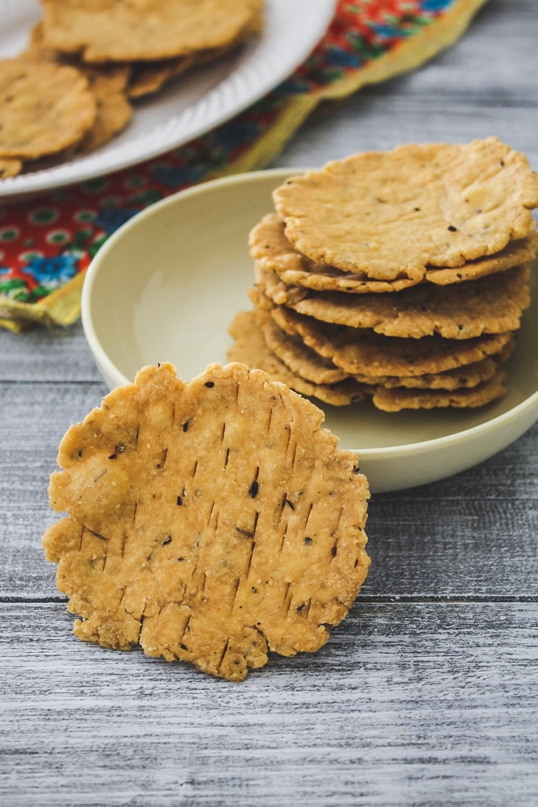

fasi puri (ફરસી પૂરી )
ફરસી પુરી એક ક્રિસ્પી પુરી છે જે સ્વાદમાં લાજવાબ છે. ગુજરાતીમાં “ફરસી” નો મતલબ ક્રિસ્પી થાય છે અને માટે તેના નામ પ્રમાણે તે એકદમ ક્રિસ્પી હોય છે. તેને મેંદો, સોજી, મરી, જીરું અને અન્ય મસાલાઓથી બનાવવામાં આવે છે. પહેલાના સમયમાં તેને વિશેષ નાસ્તાના રૂપે ખાસ કરીને તહેવારો દરમિયાન બનાવવામાં આવતી હતી. આ પુરી મીઠું અને ખાટુ કેરીનું અથાણું અથવા ચા અને કોફીની સાથે સૌથી સરસ લાગે છે.

<>
સામગ્રી
|
1 -૧&૧/૨ કપ મેંદો
2 - ટેબલસ્પૂન સોજી (રવો)
3-૧ ટેબલસ્પૂન આખા મરી
4 - ટેબલસ્પૂન ઘી (બટર) અથવા તેલ
5 - ટીસ્પૂન જીરું
6 - માટે તેલ
7 - પાણી
8 - મીઠું
બનાવવા ની રીત
1 - એક કાથરોટમાં મેંદો, સોજી, જીરું, ૩ ટેબલસ્પૂન ઘી અથવા તેલ અને મીઠું લો અને બરાબર મિક્ષ કર
2 - તેમાં જરૂર પ્રમાણે થોડું થોડું પાણી નાખોં અને કઠણ લોટ બાંધો. તે પરોઠાનો લોટ અથવા મસાલા પુરીના લોટની તુલનામાં થોડો વધારે કઠણ હોવો જોઈએ. br
3 - લોટને કપડાંથી અથવા થાળીથી ઢાંકીને ૧૦-૧૫ મિનિટ સુધી સેટ થવા દો. લોટને ૨-૩ સરખા ભાગોમાં વહેંચો અને દરેકમાંથી એક લાંબુ ગોળ બનાવો. તેને ચાકૂથી નાના નાના ભાગોમાં કાપો અને દરેક ભાગમાંથી લૂઆ બનાવો
4 -ત્યારબાદ પાટલીની ઉપર એક લૂઓ મૂકો અને તેને વેલણથી ૩-૪ ઇંચ વ્યાસ વાળી અને ૩-૪ મિમી જાડી પુરીના આકારમાં વણી લો. વણેલી પુરીની ઉપર ૨-૩ આખા મરી મૂકો અને તેને દસ્તાથી ક્રશ (ભૂકો) કરો. ચાકૂ અથવા કાંટા ચમચીથી પુરીમાં છેદ (કાણાં) કરો જેથી તળતી વખતે તે ફૂલે નહીં. એક પુરીમાં ૪-૫ જગ્યાએ છેદ (કાણાં) પૂરતા છે
5 -એક કડાઈમાં તળવા માટે તેલ ગરમ કરો. જ્યારે તેલ મધ્યમ ગરમ હોય ત્યારે તેમાં ૪-૫ પુરી નાખોં અને તેને બંને બાજુ હલ્કી ગોલ્ડન રંગની થઈ જાય ત્યાં સુધી અને ક્રિસ્પી થાય ત્યાં સુધી તળો. વચ્ચે ૧-૨ વાર જરૂર પ્રમાણે પુરીને પલ
6 -તળેલી પુરીને એક પ્લેટમાં રાખેલા પેપર નેપકીનની ઉપર કાઢો. પુરી થોડી ઠંડી થયા પછી વધારે ગોલ્ડન રંગની થઈ જશે. બાકીની પુરી પણ આ જ રીતે તળી લો. ક્રિસ્પી ફરસી પુરી તૈયાર છે. ઠંડી થયા પછી તેને એક ડબ્બામાં ભરી દો, તે ૧૦-૧૫ દિવસ સુધી સારી રહે
" frameborder="0">